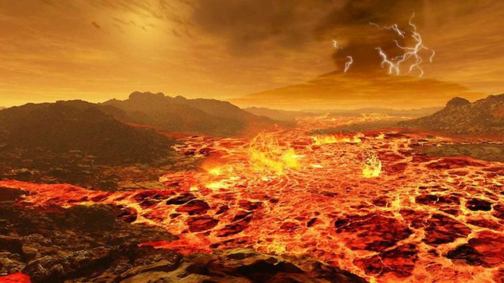
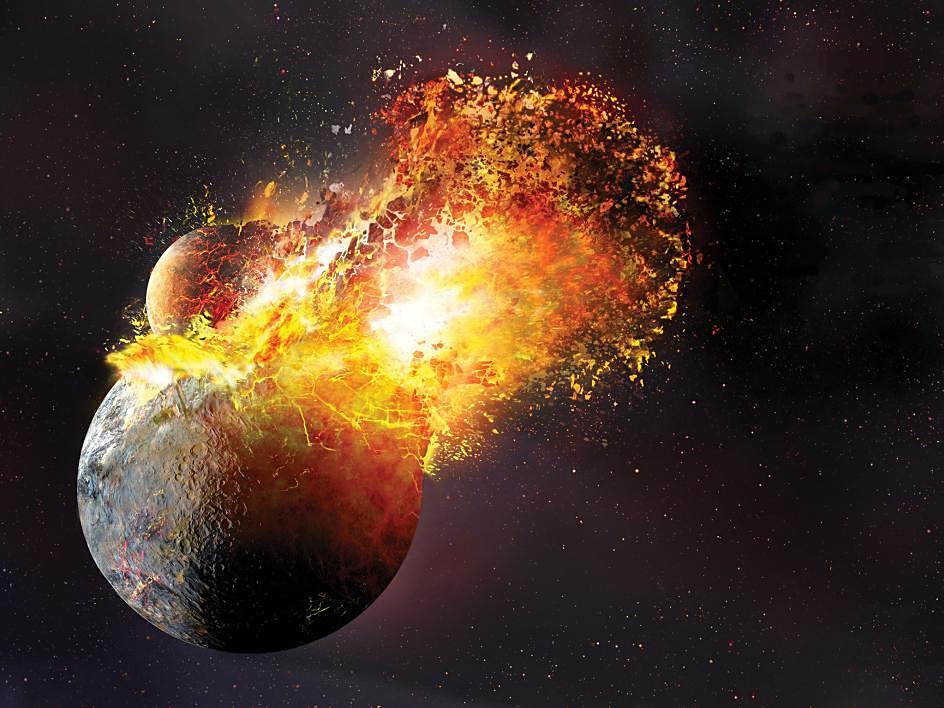
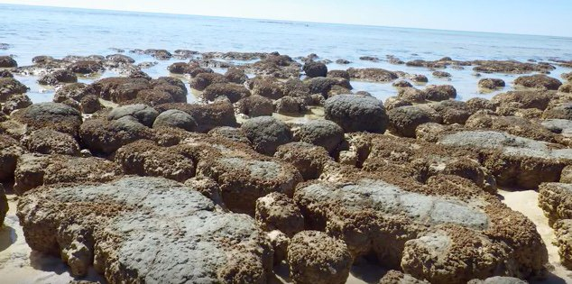
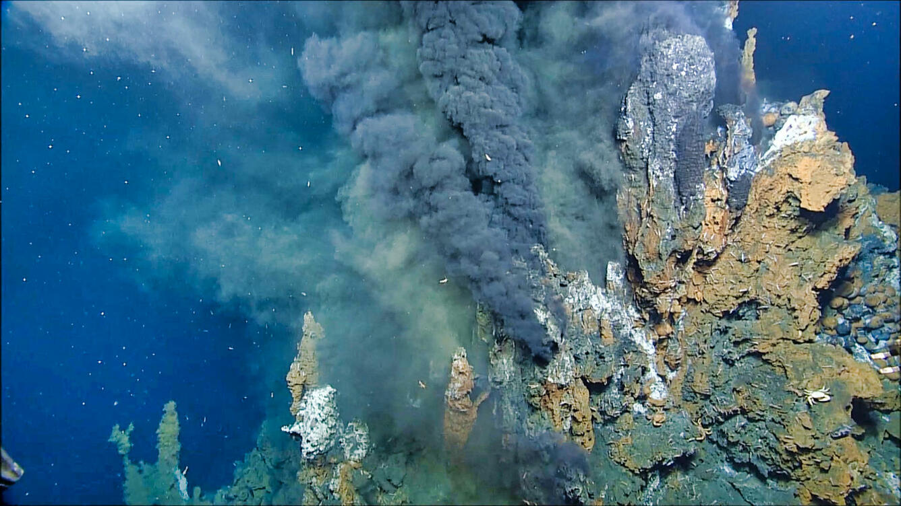
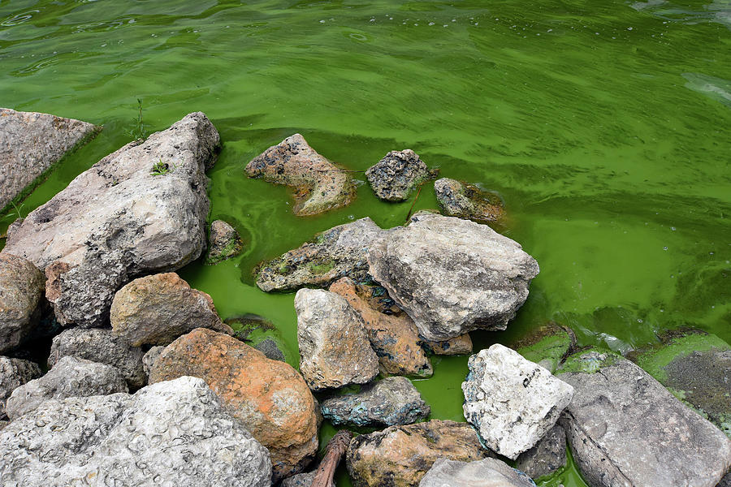
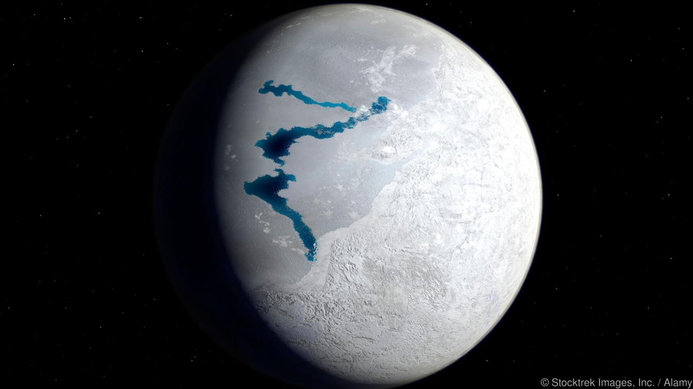

Our time traveling stroll down memory lane begins in a pretty rough place, the newly formed Earth. At this point in
time the surface of our planet was a molten, hot hell. So, we refer to this time as the Hadean after the molten,
hot hell of Greek mythology (Hades). Our side of the cosmos was still blowing off some steam from the busy work of
forming our solar system. Our little neighborhood in the Milky Way was little more than a planetary junkyard of
asteroids and unnamed space shrapnel, constantly crashing into each other with Star Wars explosions. Our planet was
just as much a part of that food chain. That's what planet forming is in the early stages, endless miles of debris.
Unclaimed by the gravity of planets or stars, asteroids just cruise through the Galaxy like sharks in the water.
So, our Earth at this point, having only recently swirled together from leftover Stardust, was this red-hot spinning
ball of molten rock. And it would pretty much stay that way thanks to relentless asteroid collisions. In fact, the
most epic collision may have formed our moon.

Making the moon...
It all began and ended when this mega, biggie-sized space rock the size of Mars named ‘Theia’ crossed orbital paths
and t-boned the ever-loving star dust out of the Earth. The two heavenly bodies hit so hard they essentially fused
together in the fray, ejecting molten rock and ash out into the void. Of course, this is outer space we’re talking
about where circular motion is king. The orbital forces of gravity cause any and everything to coalesce into spheres,
ellipses, and rings. Likewise, the mega-tons of leftover debris swirled and clumped together with the gravity provided
by the newborn Earth to form the glowing, dusty ball of ash we all know and love.

About Timeline
Let’s be honest, when you think about geological timelines do you picture dinosaurs grazing in an ancient valley with giant volcanoes erupting in the background? Do you picture Cavemen in deer-skinned onesies, hurling Spears at wooly mammoths? It's OK, me too. I'm not saying that those things are not a part of it, but geological time has so much more to offer. A geology timeline covers the formation of our planet, moon, continents, oceans and Life with a capital L. Geology forces us to zoom out and it reminds us that while we may think of ourselves as residents of our state, and the legal or illegal citizens of our nation; we are in fact on a planet orbiting around the Sun. So, strap in, because this is going to get a little intense...in a purely academic way that is.
The Precambrian Supereon 4.54 bya - 541 mya
Hadean 4.54 bya
Archean 4.0 bya
The next major eon kicks off about 4 billion years ago, but of course life on Earth doesn’t really flourish, or at the very
least start to appear in the fossil record until roughly 3.8 billion years ago. This is largely because back in the Hadean
the Earth kept getting tag-teamed by asteroids every other Tuesday leaving a superheated surface from all of that kinetic energy.
Our solar system would need to run out of rocks to throw before even the simplest forms of life could plant their flags in the dirt.
When the Earth did get to take a breath (in the form of steam released from the cooling crust that would condense and fall as rain for millions of years)
life could finally take hold.
So, now the Earth’s crust has cooled (well, for the most part). At this point the land is a mosaic of volcanoes and lava-filled fault
lines that split into barren continents whose land masses are mere lily pads in comparison to the vast oceans that surround them
[more on oceans in a bit]. So, Its not exactly Margaritaville on the island continents. With the land dominated by volcanic continent building,
dumping iron deposits into the oceans and spewing greenhouse gases into the atmosphere, there was barely any oxygen in the air that wasn’t outcompeted
by C02 and methane. Single celled microbes like Bacteria and Archaea were the only rough neck life forms that could call this muggy, toxic water world
home. So, for a couple billion years the oceans and tidal pools flourished with life. Of course, without oxygen, the molecular key to unlocking metabolically
available energy, the scale and complexity of Life was limited to a single cell. That is until one group of single celled microbes would win the evolutionary
jackpot and usher in the next page turning chapter in the story of life.
Proterozoic 2.5 bya
I have to warn you that this eon can tell an epic story all on its own. The earth at this point was a pretty strange and unfamiliar place. From space the oceans
would be green from iron deposits. The seas and shallows would be filled with life in the form of slimy, compact layers of single-celled bacterial colonies;
countless trillions of microbes living and dying to leave behind spent mineral remains of rust-colored stromatolites (ancient rocks formed from lithified microbe
colonies) billions of years later.

Meanwhile on land, restless volcanoes pump steam, noxious gases, and soot into the atmosphere. The sky is tinted orange with
methane and carbon dioxide that wrap the Earth in an anoxic (deprived of oxygen), heated blanket of greenhouse gases. It was a suffocating place. Not only were
the single-celled microbes of this time the only form of life that could tolerate a world without oxygen, but they could also not survive a world filled with it.
Of course, everything would change when some new kids on the block known as cyanobacteria would come on the scene and break all the rules.
The planet was a very volatile place. Volcanic activity was just as rampant in the oceans as it was on land. Beneath the ocean, magma-fueled thermal vents spew a cocktail of
chemical compounds into the sea water to include certain elements that are essential to life. Microbial life was very simple at this point, and it was able to
utilize the heat and chemical energy from these vents to drive its metabolism. Though toxic and scolding to us, these thermal vents were quite literally fountains
of youth for those early deep-sea microbes. However, they were completely dependent on these thermal vents for their energy demands. In fact, thick, plaster-like
layers of aerobic bacteria can be seen building up along the sides of thermal vents even today. Of course, in order to explore and exploit other environments and
diversify they would need to evolve new mechanisms to aid in their energy independence.

We don't know how or exactly when it happened, but at some point in those strange ancient oceans, microorganisms near the water’s surface gained the ability to utilize the
sun’s energy to drive their metabolism (converting CO2 into sugars) by 2.4 billion years photosynthesis was hardly new. Early photosynthetic bacteria evolved to
make use of the near-infrared spectrum of light at a time when the Earth was illuminated by a young, much dimmer sun, but a chosen few (cyanobacteria) would take
things to the next level when the byproduct of their new, chlorophyll-based photosynthesis was oxygen.

Yes, it was Life that brought oxygen to the atmosphere, and it was oxygen that would expand upon the size, complexity, and biodiversity of living things in unimaginable ways,
but not before single-handedly pushing life to the brink of extinction.
The problem with Oxygen
You and I belong to a long evolutionary line of multicellular organisms whose metabolisms have evolved around an oxygen filled world, but for early life 2.3 billion years ago
it was something that had to be adapted to. For one thing oxygen is highly reactive. When its not bound in molecular matrimony
In a chemical compound it has the nasty habit of stealing electrons from other molecular arrangements.
Let’s just say that when you’re an ancient Bacterium whose entire existence is contained within a single, microscopic cell, that kind of volatile chemistry matters. Microbes
like bacteria interact directly with the molecular nature of the world, and thus without the necessary means to keep those naughty O2 molecules at bay it was
absolutely toxic to them.
Of course, oxygen was not just a threat on the molecular level. There were global consequences to the build-up of oxygen in the environment. Photosynthetic metabolism
pulls CO2 from the atmosphere to feed the newly evolved photosynthetic cell’s hunger for glucose. Oxygen also competed with methane, the prominent greenhouse gas at the time.
Remember we referred to the stubborn atmospheric layer of greenhouse gases as a heated blanket. Well, when cyanobacteria and all other photosynthetic organisms came along, they
essentially ripped the covers off the Earth leading to an unparalleled drop in global temperature. For the first time since its inception the Earth would let go of its ancient heat
and freeze from poll to poll to become a “Snowball Earth” for millions of years. The global frost would nearly eradicate all forms of life on Earth. But there are holes in everything,
sections of the ocean not fully frozen where a brighter sun’s rays were concentrated just enough to allow radiant heat to reach and resurrect what sparse colonies of microbial life held
on near the surface...aerobic life persisted, evolved and diversified. While oxygen is destructive the payoffs are undeniable. Evolving an oxygenic metabolism provided more energy and thus
paved the way for greater size and complexity.

The Great Green Ocean
Volcanic activity is not just confined to the land. White-hot magma flows beneath the ocean's crust as well. That magma breaks through the ocean floor in the form
of chimney-like thermal vents. These vents spew a cocktail of metals, minerals, and gases into the seawater. Copious amounts of iron dissolve into the primordial oceans.
In the absence of oxygen, it reacts with abundant sulfur compounds (ferrous sulfate) to trigger a global chain reaction that turn the oceans green for millions of years.
Millions of years later when oxygen is introduced into the atmosphere by photosynthetic microorganisms it will react with the dissolved iron forming rust which will turn
the oceans an apocalyptic shade of red. Now bound to oxygen this iron rust will settle on the ocean floor transitioning the waters into the familiar blue hue the Beach
Boys will later sing songs about.
The Phanerozoic Explosion of Life 541 mya - Today
Paleozoic 541 - 252 mya
Once life “found a way” to utilize oxygen, as opposed to dying off because of it, the rate and diversity of evolution took off at break-neck speed. We (scientists) refer to this time as the “Cambrian Explosion.” Remember that everything that happened before this point was referred to generally as the Precambrian. It was a biological renaissance for diversity as it ushered in the dawn of multicellular life. The biosphere would soon be host to countless evolutionary 1st drafts. Imagine the very beginning. The land was completely barren. Not only were there no plants, but there was no soil from which they could sprout. The Earth would need to orbit the sun hundreds of millions of times before the first blade of grass could appear. No, let’s be clear, the story of biodiversity began in the water. The early oceans, full of resources, devoid of predators (they haven’t evolved to eat each other just yet) became a massive Kickstarter campaign whereby the gene flows of Life would generate living, metabolizing representatives of every phylum and genus to take up residence on the Earth. At this tender age of the Paleozoic multicellular life was starting to flourish. Single-celled microorganisms engulf one another for food around the clock. However, occasionally the microbe that is swallowed doesn’t die. Instead, it thrives inside of the larger cell, contributes to that cell’s survival, syncs up its reproductive cycle with that cell. Genes are shared between them until they ultimately divide as one cell, one organism. Single-celled microorganisms that had evolved to live and grow in colonies have become more specialized, far more adapted to living as a part of the colony than on their own. The colony becomes a hive mind of form and function. Individual cells within the colony forfeit their reproductive capabilities instead relinquishing their genes to the community until it is no longer the cell that is copied but its function. The colony of single cells becomes a multicellular organism. These scenarios are what scientists refer to as "endosymbiant theory" and it is believed that this scenario occurred in nature many many times and this relationship between multiple single-celled life forms openned the door to multicellularity The animal kingdom (to which we belong) is populated exclusively with multicellular organisms.